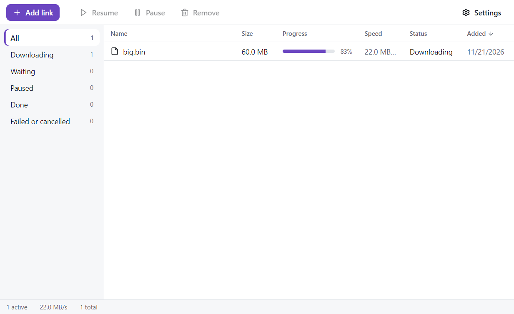

A download manager that only takes what you choose.
Several connections per file, pauses that survive a restart, and a browser add-on you can tell what to leave alone.

The problem
Download managers help until their browser add-on starts grabbing things you never asked for: a video you were only watching, or a stray file a site loads in the background. Then you switch the add-on off, and lose the speed.
How it works
- Paste a link, or let the browser add-on hand a download over.
- GDM splits the file across several connections and saves it where you say.
- Pause, close the app, come back: it carries on where it stopped.
What you get
You pick what it takes
Leave file types to the browser (images by default). If the app cannot take a link, the browser keeps it.
Pause that survives a restart
Progress is saved. If the file changed on the server in the meantime, GDM starts over instead of corrupting it.
Several connections
Up to 32 per download, a limit on how many run at once, and a speed limit.
Plain messages
When something fails you get the reason in words, not a code.
Stays on your PC
It listens on this computer only, behind a token the browser add-on must present. Nothing is sent anywhere.
Coming
Pause capture for one site, a minimum size for capture, and an "ask first" option. Not built yet.
Price
Free. It is a personal tool, so there is no plan to buy.
Questions
Does it work in my browser? The add-on is tested in Chromium. Edge uses the same engine but has not been run; Firefox is not supported yet.
Can it download videos from any site? Only video and audio files the page loads directly. Streaming formats (HLS, DASH) and protected media are not supported.
Is it finished? It is a working first version. The tray menu and desktop notifications have not been checked on screen yet.